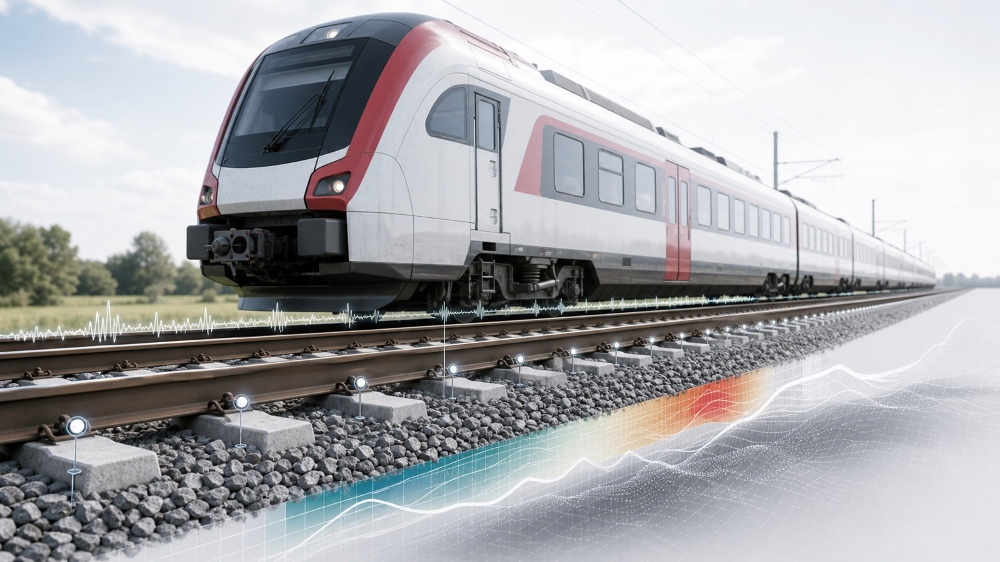

June 2026
New Engineering Structures publication led by our PhD student Xiaodong Han
We are pleased to share a new publication led by our PhD student Xiaodong Han: “Joint estimation of railway ballasted track irregularities and stiffness using dual Kalman filter strategy and dynamic vehicle-track model,” by Xiaodong Han, Shaoguang Li, and Liangliang Cheng, published in Engineering Structures.
Track irregularity and support stiffness are two important indicators for the safety and condition assessment of ballasted railway tracks. Because their effects are coupled in onboard measurements, estimating both quantities simultaneously remains a challenging task.
This work proposes a dual Kalman filter framework that combines a vehicle-track coupled observation model with a stiffness update strategy. The approach enables the joint estimation of vertical track geometry and support stiffness from onboard measurements, supporting more informative railway infrastructure monitoring and condition assessment.
The article is published in Engineering Structures, Volume 365, Article 123194.
